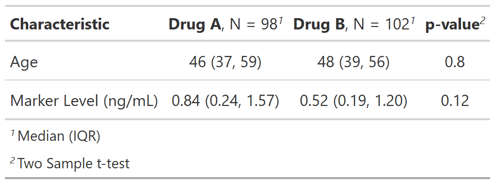

| add_p.tbl_summary {gtsummary} | R Documentation |
Adds p-values to tables created by tbl_summary by comparing values across groups.
## S3 method for class 'tbl_summary' add_p( x, test = NULL, pvalue_fun = NULL, group = NULL, include = everything(), test.args = NULL, exclude = NULL, ... )
x |
Object with class |
test |
List of formulas specifying statistical tests to perform for each
variable,
e.g. Tests default to |
pvalue_fun |
Function to round and format p-values.
Default is style_pvalue.
The function must have a numeric vector input (the numeric, exact p-value),
and return a string that is the rounded/formatted p-value (e.g.
|
group |
Column name (unquoted or quoted) of an ID or grouping variable.
The column can be used to calculate p-values with correlated data.
Default is |
include |
Variables to include in output. Input may be a vector of
quoted variable names, unquoted variable names, or tidyselect select helper
functions. Default is |
test.args |
List of formulas containing additional arguments to pass to
tests that accept arguments. For example, add an argument for all t-tests,
use |
exclude |
DEPRECATED |
... |
Not used |
A tbl_summary object
Example 1
Example 2

Daniel D. Sjoberg, Emily C. Zabor
See tbl_summary vignette for detailed examples
Other tbl_summary tools:
add_ci(),
add_n.tbl_summary(),
add_overall(),
add_q(),
add_stat_label(),
bold_italicize_labels_levels,
inline_text.tbl_summary(),
inline_text.tbl_survfit(),
modify,
tbl_merge(),
tbl_stack(),
tbl_summary()
# Example 1 ----------------------------------
add_p_ex1 <-
trial[c("age", "grade", "trt")] %>%
tbl_summary(by = trt) %>%
add_p()
# Example 2 ----------------------------------
add_p_ex2 <-
trial %>%
select(trt, age, marker) %>%
tbl_summary(by = trt, missing = "no") %>%
add_p(
# perform t-test for all variables
test = everything() ~ "t.test",
# assume equal variance in the t-test
test.args = all_tests("t.test") ~ list(var.equal = TRUE)
)